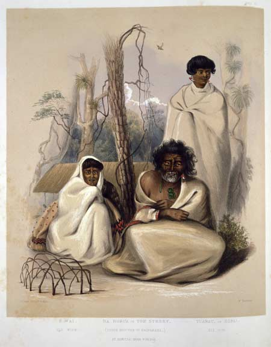
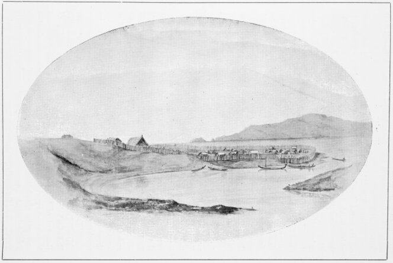
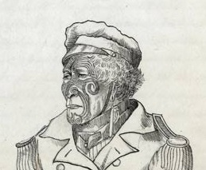

ON the morning of the 4th of November, we sailed from Port
Nicholson, and anchored at night in the mouth of Port Underwood in Cloudy Bay. The lofty
and more barren mountains beneath which it lies struck us as cheerless and desolate
after the shores of Port Nicholson; and rude flurries of wind from the high peaks
whistled among our rigging.
In the morning of the 5th we warped further into the harbour; and
found no less a contrast in the character of the natives inhabiting the two places. The
Kawia natives had evidently been incited against us by Guard and Wynen, who had
been inclined before our arrival to purchase Port Nicholson themselves, but had
abandoned this idea in the hope of either deriving some benefit from our purchase of the
Ohiere or of forestalling us by buying it themselves. The fact that we had
employed, a Te-awa-iti agent in negotiating with the rival Ngatiawa tribe,
had also excited their envy and jealousy. "Gun-eye" and Charley, with their elder
brother Puaha, and their uncle Ngaharua, a near relation of
Rauperaha, who was more commonly called "Tommy Street," after a merchant whom he
had visited in Sydney; a tall bullying chief named "the Big Fellow," and several others,
came on board and complained that we had purchased Poneke, as they called Port
Nicholson, while it belonged to Rauperaha and the rest of the Kawia tribe.
Colonel Wakefield answered, that he had bought it from the natives
in possession of it, who asserted it to be theirs; and that the Kawia had better
ask Warepori for some of the payment, if they had a real and solid claim. He
advised them, jokingly, to make haste, lest there should be nothing left but the muskets
and ball-cartridge. This hint, and the hospitality of our cabin-table, quickly made
friends of these chiefs; and they very soon abandoned this subject, and took up that of
the purchase of the Ohiere. We found Puaha far superior to his younger
brothers in dignity of manner. He was of a milder temper, and moreover evidently more
capable of appreciating the advantages to be derived from a civilized White society. All
the others seemed to look no further than the immediate payment, and the increased
market which they might obtain for pigs, potatoes, and firewood.
"Ngaharua" is Nohorua, the father of Dicky Barrett's wife, and soon to be a signatory
to the Treaty of Waitangi. He's Te Rauparaha's elder half-brother, and a respected
Ngāti Toa leader and tohunga.

This lithograph is from a painting of Nohorua and his family by George Angas,
probably from around 1844.
This interaction with Nohorua is telling - the sale of Port Nicholas is already being
contested, only days after it was supposedly completed.
Whaling-Stations.
We found in this harbour the Honduras bark, taking in oil and bone
from the stations; and we were very busily employed in making up our letters for
England.
Dicky Barrett left us at this place, proceeding to
Te-awa-iti in a sealing-boat with all his family and train. He agreed to return
to us here in order to proceed to Taranaki.
The harbour of Port Underwood we found much exposed to the
southerly gales, which send a rolling swell right in. Two bays at the head of the
harbour are more sheltered; but in no part is there any extent of flat land.
We found several whaling-parties on the different beaches; which
are separated from each other by such steep ridges that boats are the more common means
of communication. In Ocean Bay, in which the swell causes a good deal of surf, we saw
the timbers of some small vessels which were being built there, and found an old trader
named Ferguson who had the reputation of never being sober. On the sides of the
impending hills are the remains of some clearings made by the crew of a whaler under the
direction of a Captain Blenkinsopp, who purchased this bay from the natives, and was
also said to have bought the plains of Wairau, a few miles further south, from
Rauperaha and Rangihaeata, his fighting general, for a ship gun, some
years since.
In Kakapo Bay, we found Jacky Guard and all his family,
including his wife, a fine buxom-looking Englishwoman, and the children who were with
her prisoners among the natives. They all looked healthy and rosy.
Still further north on the west side was another bay, also
inhabited by White people. These two bays are much better sheltered than Ocean Bay.
One party, conducted by a Portuguese, were established in a cove
just inside the eastern head, and enjoyed a good look-out over to the White Bluff from
the high neck of land above the houses.
We had plenty of good fishing while here. A fish like the ling,
some of which we caught weighing 50 lbs., gave great sport, requiring half an hour's
play to kill; and some conger-eels also furnished amusement to parties who went out in
the cutter to the reef at the entrance of the harbour. One of these enormous creatures,
six feet long and as thick as a man's arm, floored everybody in the boat before a cut
across his tail deprived him of his strength.
We had completed our letters on the 9th, and only waited for
Barrett. On the 12th, the Honduras proceeded to Te-awa-iti to take in oil and
bone there. A small schooner, the Susannah Ann, arrived from Sydney a day or two before,
to take the oil from the station of Mr. John, the Portuguese.
Fighting Bay--Naval Engagement.
On the 13th we sailed for Te-awa-iti, to look for
Barrett. Arthur was again on board of us as pilot. As we ran along the seventeen
miles of rugged and barren coast between the two places, he showed us some
remarkable spots. The first promontory was called Run-under Point, from a boat
having foundered near that spot while running in tow of a whale in stormy weather. A
small bay, which sometimes affords shelter to the whale-boats when caught outside in
a heavy gale of wind, is called Fighting Bay. Here a great naval engagement once
took place between the canoes of Rauperaha and his followers, and those of
Bloody Jack, who was at the head of a predatory party of the Ngahitau.
Rauperaha had a narrow escape on this occasion; only saving his life by
leaving his mat in the hands of his inveterate enemy, who had seized him, and by
diving until he got among his own canoes. He subsequently took advantage of a fog to
abandon the scene of combat, leaving the Ngatiawa, whom he had persuaded to
join him, at the mercy of their foes. This treacherous policy was, we were told, by
no means uncommon on his part, it being his plan to destroy one enemy by means of
another. As we approached the mouth of the Tory Channel, the wind fell light, and we
consequently lost the flood-tide. We had been hove-to for half-an-hour, when a fresh
breeze from south-east sprang up, and Arthur, who knew the sailing qualities of the
Tory, told Captain Chaffers that he might "put her at it," and we rattled in against
a four-knot tide. We flew past the southern head, on to which you might have flung a
biscuit, with the tide-rip fizzing and smoking on either side of us. A handy ship is
requisite to effect this entrance. We found the Honduras making eight inches of
water, having been swung by an eddy against a rock, and narrowly escaped total
wreck, when coming in with a fair tide yesterday.
We found that Barrett had been detained by the illness of his
wife; and as she was still too ill to come on board, Colonel Wakefield determined to
cross over the Strait and effect an agreement with Rauperaha, and then return
to the north entrance of the Sound for Barrett. We took with us an interpreter named
John Brooks, who had been engaged in Cloudy Bay as a sawyer. He was thoroughly
acquainted with the native language and habits, having been eight years among the
wildest Waikato natives.
Four of our crew asked and obtained permission to leave the
ship here, intending to settle in Cloudy Bay. Two others ran away to join them soon
after. As the whaling season was nearly over, they would probably soon repent their
bargain, and be glad to engage in another ship. They were the most idle of our crew;
and were no doubt tempted by the scenes of drunkenness and low debauchery going on
in the bays.
On the 16th, we stood over to Kapiti, leaving the
Channel with the ebb tide. About four miles N. E. of the Brothers, we saw a
dangerous rock, looking like a boat at a short distance. As we neared the north
shore, we could distinguish the opening nearly abreast of the flat table island of
Mana, where a small harbour called Porirua indents the wooded hills.
These incline inwards from the coast a little to the south of Kapiti, and a
sandy beach succeeds the rock-bound shore which extends from Cape Terawiti.
Battle Of Waikanae.
As we approached Kapiti, which has a high peak in its
centre, and is covered with forest to the water's edge, we made out some small islands
lying off its south-eastern extremity. These form a very excellent anchorage for a
limited number of ships. A whale-boat from the easternmost island soon boarded us; and
the "headsman," or commander of the boat, piloted us into an outer roadstead in
twenty-two fathoms, which is reckoned more convenient for a large ship than the inner
one, as a vessel can more easily get under way in case of accident. He told us that a
sanguinary battle had taken place at a village called Waikanae on the mainland,
about three miles from our anchorage, the same morning. Many of the whalers had
witnessed the contest from their boats outside the surf. We afterwards gathered the full
particulars. The feast to which Te Wetu had told us he was going, had taken place
on Mana, where the funeral obsequies of Waitohi, a sister of
Rauperaha, had been celebrated by some thousand natives of different tribes. On
this occasion, Rauperaha had killed and cooked one of the unfortunate
Rangitane slaves, who brought him tribute from the Pelorus; and had shared the
flesh among his most distinguished guests. Among these were the Ngatiraukawa, a
tribe who were induced several years before by Rauperaha to come from the
interior of the North Island in order to assist him in his conquest of these parts, and
who were led by a renowned chief named Watanui, or "the Great Store." They
commonly reside at Otaki, about twelve miles north of Waikanae, and had
been incited by Rauperaha to annoy the Ngatiawa on their first arrival
from Taranaki. Feuds, bloody wars, and a bitter hatred of each other, had been
the consequence; and some of their old grievances had been revived by their meeting at
Mana. Rauperaha cunningly fanned the flame; and mutual insults and recriminations
followed, on the passage of the Ngatiraukawa past Waikanae to their homes
after the feast. Shots were fired in defiance over their heads as they passed along the
beach, and even some pigs which they were driving were taken from them and killed by the
Ngatiawa. They prepared for a contest, were marshalled by their chiefs the same
evening, and, by previous concert with Rauperaha, attacked the Waikanae pa
at daylight
What Jerningham is describing here is The Battle of Kūititanga, often considered the
last battle of the "musket wars", the period of inter-tribal warfare that followed
the widespread adoption of muskets in New Zealand. For a number of years there has
been an uneasy peace between former allies Te Āti Awa and Ngāti Raukawa, but now
that peace has come to an end. Driven by a desire for revenge of past insults, and
competing demands for land after their shared migration south, the two tribes have
finally come to battle.
Contrary to Jerningham's claims, most historians agree that Te Rauparaha had
attempted to keep the peace between these two Ngāti Toa allies. The strength of his
position relies on his ability to command a grand alliance of the migrants from the
north. Their conflict puts him in an impossible position, with friends and relations
on both sides.

The image is a photolithograph of Kenakena pa from around 1845. It was this pa that
was besieged by Ngāti Raukawa during the battle. The pa sits on the mouth of the
Waikanae river, with Kapiti island visible in the background.
Two rivers meet there, the Waimea and the Waikanae. A
small out-lying village, situated on the sandy tongue of land between the two, sustained
the first brunt of the attack. A Ngatiraukawa spy, who found a boy of ten years
old awake in one of the huts, asked him for a light for his pipe, thinking to make him
believe that he was a friend. His blood, however, was the first spilt; for the gallant
little fellow took up a loaded musket and shot him dead on the spot. His friends now
invested the village, which, with only about thirty men, held out until their friends
from the main pa were roused by the firing and crossed the Waikanae to
their assistance. A fierce and bloody contest ensued, ending in the retreat of the
invaders, and their total rout along the sandy beach.
Rauperaha, who had failed to bring the assistance of men and
ammunition which he had promised to Watanui, landed from his canoe late in the
skirmish, but swam through the surf to it on the first symptoms of defeat, the
Ngatiraukawa losing many men in a vigorous rally made to cover his escape.
The numbers engaged had been, from all that we could gather, about
equal on both sides, to the amount of 400 or 500 men each; but the defeated had left
fifty dead on the field, and the conquerors only eighteen. The beaten party had managed
to carry off their wounded, of whom there were a much larger number on both sides.
We had just made up a boat's crew from the cabin party, to go over
and see the field of battle, the surgeons taking their instruments with them, when a
message arrived from Rauperaha. He was on Evans's Island, the nearest to the ship
of the three islets, and expressed a desire to see Colonel Wakefield. We therefore
pulled round and went to see him.
He had just returned from the scene of bloodshed, whither he
asserted that he had gone to restore peace; and, seeing the arrival of our ship, which
was taken for a man-of-war by many even of the Europeans, he had betaken himself with
all his goods to the residence of an English whaler named Thomas Evans, on whom he
relied for protection from some imaginary danger.
We had heard, while in Cloudy Bay, that Rauperaha had
expressed himself in somewhat violent terms towards us for purchasing Port Nicholson
without his sanction; and he was described by the whalers as giving way to great alarm
when told what the ship was, and as having inquired anxiously what natives we had on
board.
Rauperaha--His Appearance.
At last we meet Te Rauparaha, one of the greatest figures of the period. He is the
architect of Ngāti Toa's great migration south, and has spent the last two decades
negotiating a delicate web of alliances and rivalries, always with the aim of
securing his tribe's position in the roiling chaos of post-musket New Zealand. A
thorough account of Te Rauparaha's history and the history of Ngāti Toa could (and
does) fill several history books, so I won't get too deep into it here. As
Jerningham meets him, Te Rauparaha has established a stronghold on Kapiti island
that ensures his relative safety, aloof from the battles between his erstwhile
allies. Whaling stations around Kapiti and Mana islands, some run by Māori and
others by Europeans, ensure a steady trade in muskets and other goods. But the
crumbling of the Ngāti Raukawa and Te Āti Awa alliance leaves him in a precarious
position, forced to choose sides. In the south, Ngai Tahu are an increasingly
troublesome thorn in his side. The arrival of the Tory could prove to be either a
great boon, or a destabilising force.
The other thing you need to know is that Jerningham _hates_ Te Rauparaha. He receives
the worst of Jerningham's slights, and the pettiest of his insults. Jerningham never
misses an opportunity to get a dig in at him, starting with this section about his
looks. As unfair as this characterisation is, we'll see later that Jerningham has
his reasons for disliking Te Rauparaha.
As we leaped from our boat he advanced to meet us, and, with looks
of evident fear and distrust, eagerly sought our hands to exchange the missionary
greeting. During the whole of the ensuing conversation he seemed uneasy and insecure in
his own opinion; and the whalers present described this behaviour as totally at variance
with his usual boastfulness and arrogance. He made us a pious speech about the battle,
saying that he had had no part in it, and that he was determined to give no
encouragement to fighting. He agreed to come on board the next day; and departed to one
of the neighbouring islands.
He is rather under the average height, and very dignified and
stately in his manner, although on this occasion it was much affected by the wandering
and watchful glances which he frequently threw around him, as though distrustful of
every one.
Although at least sixty years old, he might have passed for a much
younger man, being hale and stout, and his hair but slightly grizzled.
His features are aquiline and striking; but an overhanging upper
lip, and a retreating forehead, on which his eyebrows wrinkled back when he lifted his
deep-sunken eyelids and penetrating eyes, produced a fatal effect on the good
prestige arising from his first appearance. The great chieftain, the man able to
lead others, and habituated to wield authority, was clear at first sight; but the savage
ferocity of the tiger, who would not scruple to use any means for the attainment of that
power, the destructive ambition of a selfish despot, was plainly discernible on a nearer
view.
This sketch of Te Rauparaha by William Bambridge is from later in his life, around
1847, but I think it gives more of a sense of personality than more contemporary
portraits. He wears a gifted naval uniform here, rather than his usual traditional
clothes.

The life of this remarkable savage forms an aera in the history
of New Zealand.
Rauperaha-His History.
Previous to 1825 he had lived among his tribe, the
Ngatitoa, in the neighbourhood of Kawia. Hongi
returned from his visit to England in 1820, provided with muskets and devoured
with restless ambition. His followers became, by their possession of fire-arms, the
most powerful tribe in New Zealand. At their head he ravaged the whole northern end
of the North Island. In consequence of these devastating wars the Waikato and
Kawia tribes pressed upon each other, and the latter were obliged to give way
in the struggle.
Rauperaha had already gained a great name by his warlike
achievements; and he was thought worthy of a place second only to the head chief
Te Pehi in the guidance of the expelled tribe, which came southward to seize
upon a new home.
Te Pehi Kupe was the same man who afterwards visited
England. He was known in former publications by the name of Tupai Cupa, a
corruption of his real title.
He married a wife of rank from the Ngatiawa tribe; and Rauperaha
himself was descended from a Ngatiawa mother. The two tribes were
consequently allied to a considerable degree; and it was not until the Kawia
reached the southern boundary of the Taranaki district, in which the
Ngatiawa dwelt, that their migration was arrested by opposition. Beyond the
habitations of the Ngatiawa they met a population composed of various
barbarous tribes, for the most part the aboriginal occupants of those regions.
The Ngatiruanui and Ngarauru occupied the coast
between Cape Egmont and Wanganui. At the latter place there was a mixed
population, formed of the original occupants, the Ngatiruaka and
Ngatipa, and the migrators from a large and powerful tribe who had dwelt on
the banks of a lake called Taupo, far in the interior. These immigrants, who
consisted of the Ngatitahi and Patutokoto tribes, had first compelled
a cession of territory from the aborigines, and finally amalgamated with them in a
friendly way; both uniting under the generic name of the Wanganui tribes. The
Ngatiapa, Rangitane, and Muopoko occupied the succeeding coast as far
as Kapiti, and also shared the southern shores of Cook's Strait with the
Ngahitau who inhabited Cloudy Bay and Queen Charlotte's Sound. A branch of
the numerous Ngatikahuhunu tribes occupied the neighbourhood of
Wanganui-a-te-ra, or "Large Bay towards the Sun," as Port Nicholson was
called, in contra-distinction to Wanganui (Port Underwood) in Cloudy Bay.
The invading party consisted of the Ngatitoa, Ngatitama,
and Ngatimutunga tribes, led by their respective head men; and was directed
in chief by Rauperaha and Te Pehi. Rangihaeata, or "Sky jealous of the
Dawn," was another leading chief of the Ngatitoa, and had acquired another
name, Mokau, from some exploit or defeat at a river of that name south of
Kawia. E Mare was at the head of the Ngatimutunga; and our friend
"Dog's-ear" and some others led the Ngatitama.
It is related that the invaders possessed but few fire-arms;
and the success with which they overcame the resistance of their opponents, who far
exceeded them in number, seems to have been owing rather to their having become well
inured to war during their struggles with the Waikato and other northern
tribes, and to the consequent elevation among them of a few experienced and
determined chieftains, than to any vast superiority in weapons of war.
Between the rivers Patea and Wenuakura, in a
commanding position in the centre of the Ngatiruanui country, seems to have
been the spot where the first pause was made by the invaders, as though to take
breath. A detached cliff, 200 feet in height, inaccessible on all sides except by a
narrow and ascending neck of land, formed a secure position in native warfare, which
boasted of no projectile weapons. The old men of the Ngatiruanui, who still
inhabit a pa on its summit called Tihoe, describe it as having been
tenanted by Rauperaha and his followers for a considerable space of time. The
aboriginal tribes seem to have sought shelter in the interior from the invading
body, as they and their descendants at this time inhabit the same part of the coast
in large numbers.
The next conflict took place on the banks of the
Wanganui river. Deep and wide, it must have afforded a great aid in
obstructing the progress of the conquerors. The remains are still in existence, on
the south bank of the river near its mouth, of the extensive earthen fortifications
erected by the Wanganui tribes, and taken by Rauperaha and Te
Pehi; when they destroyed such numbers of their enemies, that every family
there at the present day bears the hope and desire of revenge. The Ngatiapa
and Rangitane, who dwelt in the country watered by the Wangaihu,
Turakina, and Rangitiki rivers, were next slaughtered or put to
flight; and the Muopoko were compelled to yield before the victorious party
as it swept the country between Manawatu and the island of Kapiti,
opposite to which a halt was again called.
Siege And Capture Of Kapiti.
This island, lying four miles from the shore, and abounding in
natural fastnesses, became the stronghold of the defeated party. The multitudes who
had yielded to the first shock began to gather in the rear of the Kawia; and
while they were closed in from retreat by a muster on the Rangitiki, the
country to the south was still occupied by the original inhabitants, who prepared to
defend their native land. The position of the small but vigorous party became
imminently hazardous.
Rauperaha now sought and obtained assistance from the
Ngatiraukawa or "Boiling-water" tribes, who at that time inhabited the
north-eastern shores of Lake Taupo. About sixty chosen warriors, under a
chief named E Ahu Karamu, forced their way through the hardships of the
inland path, and the dangers and ambushes of the opposing tribes, and joined him
near Kapiti.
It was about this time that a jealousy as to fame and influence
arose between Te Pehi and Rauperaha. An anecdote was related to me by
a near relation of Te Pehi, which is a full illustration of
Rauperaha's treacherous disposition, even towards his allies.
It was after the repulse of several united attempts to conquer
Kapiti, that one night he left Te Pehi asleep at the common
encampment; and, taking with him all but a small party of Pehi's immediate
followers and relations, started for Rangitiki; intending to obtain the glory
of a victory for himself, while he left his rival exposed, with a weak retinue, to
any sortie which the refugees on Kapiti might attempt. Pehi, on
waking, remarked the diminished numbers of the warriors, and asked why the huts were
empty and Rauperaha absent. "He is by this time near Rangitiki,"
answered one of his followers. "Then I shall be master of Kapiti or dead,"
replied Pehi, "by the time he returns." He mustered his men in the canoes,
and gallantly effected, with the few devoted followers who had refused to desert
him, the conquest which had been impossible to the whole body when divided by
Rauperaha's, envious intrigues.
E Ahu Karamu returned to Taupo, and related to
the rest of his tribe how fine an opening had been made for them on the sea-coast,
dwelling on the advantages to be derived from fishing and trading with the White
men. He bore Rauperaha's, invitation to the other chiefs to lead their men to
Cook's Strait, where he would assign them a part of his conquest to enjoy and
maintain, while they assisted him in crushing the remains of the insurgents about
Rangitiki and Manawatu. The conflicting opinions as to the expediency
of this course were peremptorily terminated by E Ahu, who ordered his young
men to burn the houses at Taupo; and the Ngatiraukawa migrated in
successive bodies to the coast. Rauperaha then proceeded with their
assistance to crush the remains of the aboriginal tribes; and only spared the lives
of the few Muopoko now existing in that neighbourhood at the urgent entreaty
of Watanui, a great chief of the Ngatiraukawa, to leave them as slaves
for him.
Manawatu, Ohau, and Otaki, and the shores of the
Horowenua and several adjacent lakes, were occupied by these recent allies.
In the mean while, Rauperaha had crossed the Strait, and
carried destruction among the peaceful inhabitants of the Pelorus and other parts of
the opposite coast, as I have previously related.
Visit Of Te Pehi To England.
Early in 1826, Te Pehi went on board an English ship
which was going through the Strait; and obtained, by his perseverance and energy,
the object which he had most at heart, --namely, a passage to England, in order to
bring back, like his old conqueror Hongi, a stock of fire-arms from that
country. He left his son Te Hiko o te rangi, or "the Lightning of Heaven," to
take his station among the tribe. The details of Pehi's sojourn in England
are related at full length in another work.
During Pehi's absence Rauperaha's influence was
greatly increased by his talents for intrigue; Hiko being but a young man,
and of too little experience and authority to lead warriors or to wield the affairs
of numerous allied tribes.
Pehi returned from England without having obtained a
large present of fire-arms; but with a strong disposition to adopt civilized customs
and to encourage the friendship and society of the White man. Had he lived to this
day, he would probably have been a powerful instrument in the task of improving his
numerous followers.
Soon after his return he proceeded to Banks's Peninsula in the
Middle Island, in order to procure some greenstone or ponamu from the
Ngahitau living there, with whom a truce was then existing. He was
treacherously attacked, killed, and eaten, by those among whom he had trusted
himself with the most implicit confidence.
It was to revenge his death that Rauperaha undertook, in
1830, the expedition which has attracted so much attention, because an Englishman
lent his aid in all ways to the bloody and revolting scenes by which it was
distinguished.
Stewart, the captain of the brig Elizabeth, trading from Sydney
to New Zealand, and another White savage who acted as supercargo of the vessel,
agreed to take Rauperaha with Hiko and a body of their followers down
to the place, and to remain at his disposal until he had accomplished his object, on
condition that the brig should be loaded with flax on her return to Kapiti.
The White men landed first and enticed the head chief, Te
Mairanui, on board the ship where his foes lay concealed. The latter then
went ashore, accompanied by the supercargo, and massacred or made captives nearly
the whole unsuspecting population, to the amount of two or three thousand persons.
The supercargo boasted, on his return to the ship, of the number whom he had shot
with his own gun, as though he had been at a battue of game. Two White
adventurers who had been befriended by the chief on shore, came off and cried over
their protector. They narrowly escaped death themselves, the captain having advised
the natives to get rid of persons who might report the affair at Sydney, and bring
down punishment on all concerned. The natives, however, unlike the captain, refused
to injure those with whom they had no quarrel; and the White men were landed when
the ship returned to Kapiti. The ship's coppers are related to have prepared
the inhuman feast of the cannibals as well as the food of the other savages; and the
chief, after being exhibited as a captive at Kapiti and Otaki, was
killed with the usual tortures, and his body dispersed among the relations of Te
Pehi.
Mairanui had been kept for four or five weeks on board
the ship by Stewart, as a hostage for the payment of the flax: but when it was plain
that no flax was forthcoming, notwithstanding the promises and excuses of the
natives, Stewart gave him up into their hands, and sailed away to Sydney unpaid for
his infamous services.
Shameful to relate, although a deputation from the southern
tribe, backed by the representations of the Rev. Mr. Marsden, the venerable founder
of the Church mission in New Zealand, waited upon the Government of New South Wales,
in order to obtain for Captain Stewart the penalty which he deserved, he escaped
with impunity. The affair was hushed up; evidence which might have been obtained was
put out of the way, and he was tried and acquitted.
Since Te Pehi's death, Rauperaha had become the
sole Ariki or ruler of Cook's Strait; easily weighing down the balance of
Hiko's higher descent by his own superior talents of deceit and knowledge of
their little world.
When the Ngatiawa migrated from Taranaki in about
1834 or 1835, he foresaw a probable obstacle to his authority, and moved every
indirect means to arrest their progress and to destroy them as they came. He induced
some of his old allies at Taupo to join with the Wanganui tribes in a
powerful opposition to their advance; and when this manoeuvre was defeated by
Hiko, who led a large party to the rescue of his mother's relations,
Rauperaha hounded the Ngatiraukawa on to their track.
Since their successful establishment, he had vainly endeavoured
to injure them by treacherous alliance or open enmity, and had acquired among them a
reputation for duplicity and cruelty almost unexampled in the traditions of even
Maori history.
Innumerable accounts have been related to me of
Rauperaha's unbounded treachery. No sacrifice of honour or feeling seems to
have been too great for him, if conducive to his own aggrandizement or security. He
has been known to throw one of his own men overboard in order to lighten his canoe
when pursued by the enemy; and he had slaughtered one of his own slaves at the late
feast at Mana, to appear opulent in the eyes of his assembled guests. This
was one of the poor, submissive, hard-working tributaries whom we had seen at the
Pelorus.
In his intercourse with the White whalers and traders and the
shipping in the Strait, he had universally distinguished himself by the same
qualities.
By dint of cringing and fawning upon those who showed power and
inclination to resist his constant extortions, and the most determined insolence and
bullying towards those whom he knew to be at his mercy, he succeeded in obtaining a
large revenue from the White population whether transient or permanent, which he
invariably applied to the extension of his power among the natives.
He was always accompanied in these marauding excursions, which he
frequently extended over to Cloudy Bay and Queen Charlotte's Sound, by
Rangihaeata, who had become his inseparable companion since his rise in
authority. Their respective stations were pithily described by one of the whalers, who
told us that "the Robuller," as he mispronounced his name, "cast the bullets, and
the Rangihaeata shot them." Rauperaha was the mind and his mate the body
on these black-mail-gathering rounds. They had both acquired a violent taste for grog;
and this, with fire-arms and powder, were the principal articles demanded.
Whaling-Stations-- Waikanae.
The whaling-station on Evans's Island we found to be more complete,
and under more thorough discipline and efficient management, than those in Port
Underwood or at Te-awa-iti. The boats put off after a whale just as we arrived,
and struck us by their precision and good appointment. The head of the party was a
determined-looking man of middle age, named Tommy Evans. He was obliging and hospitable
in the extreme to us during our stay; and was reckoned the best master at Kapiti.
On one of the other small islands was a station conducted by an
American, who is a renowned enemy of the whale; and two other stations were situated on
the northern part of the great island of Kapiti. All these stations seemed to us
to bear a more favourable aspect than those on the other side of the Strait. But little
of the same brutal jealousy existed between the different parties, although there was
plenty of emulation. The whalers were much more united among themselves and independent
of the natives; and, although frequent drunkenness and fighting went on ashore, the duty
seemed to be done with more alacrity, and the native women appeared to exercise less
influence in fomenting quarrels between their White companions. There were fewer
nondescript traders and idlers here than at the other places; and the "headsmen" or
leaders had less trouble in keeping their parties together and maintaining the strict
discipline necessary to ensure good work.
Evans's party had taken 250 tons of oil, and he told us that his
own profits alone would amount to 300l.
On the 17th I accompanied our three surgeons to Waikanae, to
carry succour to the wounded. We also took over E Patu, a young chief of Queen
Charlotte's Sound, who had begged a passage from Te-awa-iti, and found that he
had lost his uncle in the battle. We landed on the sandy beach, in front of a small
village called Te Uruhi, where the tangi was going on over the corpse.
Having left him among his mourning relations, we proceeded to the main pa, at the
mouth of the Waikanae river, about a mile further north. We were loudly greeted,
and conducted into a large court of the village, where five hundred men, women, and
children were assembled in a row to shake hands with us. This was no small task; but in
order to show them that we approved of their newly-acquired missionary principles, we
carefully went through the whole ceremony.
This was the largest pa we had yet seen. The outer stockades
were at least a mile in circumference; and the various passages between the different
courts and divisions formed a perfect labyrinth. A numerous train of youths guided us to
the houses of the wounded men. As we passed, we observed one of the dead chiefs laid out
in state in the court before his ware puni. His body was wrapt in his best mats;
and his head, with the hair neatly arranged and copiously ornamented with feathers,
reclined against a carved post, which was painted with kokowai, or red ochre. In
circles around stood or sat his friends and relations, wailing and lacerating their
faces and limbs.
Our surgeons were all three hard at work for some hours, extracting
bullets, binding up wounds, and setting broken limbs. We found the wounds bound up by
the natives generally with the leaf of the flax, and bark splints on the broken limbs.
The patients bore pain with the most perfect stoicism.
The inhabitants of this village professed to be all Christians,
having been converted by native teachers. Accordingly, they buried their fallen enemies
on the field of battle; adhering, however, in some degree to the native superstitions,
by burying a stock of tobacco and pipes with each, to console him on his way to the
Reinga, or future life according to their belief.
Rauperaha On Board.
On our return to the ship we found that Rauperaha had been
on board, having been received by Colonel Wakefield with a salute to the New Zealand
flag, which he did not at all understand. Indeed, it rather alarmed him, until it was
explained that an honour was intended to him and the chiefs who accompanied him.
Mr. Wynen had preceded us from Cloudy Bay; and the chiefs were at
first much opposed to selling any land, saying that they had been told the White people
would drive them away from their future settlements. They were also exceedingly jealous
of our purchase of Port Nicholson.
Colonel Wakefield, after much discussion, appeared to convince them
of the friendly intentions of the White people towards them, and that they would be much
benefited by their arrival; and they finished by saying, "Look at the land! if it is
good, take it!"
Rauperaha staid on board to dinner, with his wife, a tall
Meg-Merrilies-like woman, who had a bushy head of hair, frizzled out to the height of
six inches all round, and a masculine voice and appetite. She is the daughter of his
last wife by a former husband.
Rauperaha and several other of the Kawia chiefs drank
ardent spirits freely, repudiating the use of water, and refusing with great contempt
anything less than a full tumbler. It did not seem, however, to have the same effect
upon them that it would have upon a person unhardened to the use of liquor.
Rauperaha sat for his portrait to Mr. Heaphy, and made a
noisy demand for a waistcoat in payment as soon as the sitting was over. Indeed, he
asked shamelessly for everything which he saw, and he seemed well used to being refused.
On the 18th, the chiefs were again on board.
Tungia, who was the father of Tommy Evans's native wife, and
nicknamed "the Wild Fellow" by the whalers, was remarkable for his noisy and turbulent
manner. All the others, except Hiko and his uncle Rangihiroa, had the same
bad qualities which we had observed in the Cloudy Bay natives. They united the
uncontrolled ferocity of the savage to the acquired indifference to honour and the
degrading vices of the White outcasts among whom they had dwelt.
Hiko struck us forcibly by his commanding stature, by his
noble intelligent physiognomy, and by his truly chieftain-like demeanour. His descent by
both parents pointed him out as a great leader in Cook's Strait, should he inherit his
father's great qualities. He was sparing of his words, and mild of speech. He had
carefully treasured up his father's instructions, and the relics of his voyage to
England. He showed us a volume of the Library of Entertaining Knowledge on the New
Zealanders, in which is contained a portrait of Te Pehi, on which he placed great
store. He was said to pay his slaves for their work, and to treat them with unusual
kindness, and the White men spoke of him as mild and inoffensive in his intercourse with
them.
Rangihiroa, the younger brother of Pehi, was also a
worthy old chieftain. He was free from the vices of the other Kawia chiefs, and
was universally well spoken of as kind-hearted to all his fellow-creatures of both races
by even the most depraved of the White men. He seemed shy of putting himself forward in
the discussion, but approved of the proposed transaction in a mild and firm speech, made
for himself and for his nephew, who had not yet ventured to rely on his eloquence in the
conclave of chiefs.
A gale from south-east detained the natives on shore
Hiko--Negotiations.
until the 21st, when they came off, and the proposition was again
made to them of purchasing the whole of their rights and claims of whatever sort to land
on both sides of the Strait.
They again discussed the matter very fully, and asked to look at
the goods. This was complied with; and though they evidently considered the quantity as
far beyond anything they had yet seen or heard of in payment for a thing so great a drug
as land, they could not refrain from haggling and bargaining for an addition to the
heap. Hiko requested more soap, women's clothing, slates, and such useful
articles; while Rau- peraha and his party pressed for more fire-arms and powder.
This was arranged, after some trouble and disagreement; and Colonel Wakefield proceeded
to explain to them, by means of the interpreter, the whole force of the bargain into
which he wished to enter with them. A plan of those parts of the two islands over which
their conquests extended was carefully examined by them; and it was fully explained to
them that, after this transaction, they would have no more land, or rights over land of
any sort to sell, and that they could not receive any further payment whatever hereafter
for any land if they joined in this agreement. They were also told that a suitable
portion for the maintenance of the chiefs, with their families and successors, would be
made tapu for them for ever; and that those natives who worked for the White
people would be paid by them for their labour. All this was repeated to them over and
over again in different forms, till they showed themselves perfectly acquainted with the
bargain which they were to accept or refuse. They ended by agreeing fully to every
provision; and Rauperaha dictated to me the native names of all the places on
both coasts to which they had any claim, whether by conquest or inheritance. This
operation took some time, as I made him repeat some of the names several times, in order
to write them down clearly, and as he showed me the position of each on the map before
mentioned. He then joined with the others in consenting to cede the whole of his rights
whatsoever to land in those places. They all agreed to come on board to sign the deed,
and receive the payment, the next day.
Hiko, however, fell ill, and bad weather prevented the
others from leaving the shore. Rauperaha, who is not to be deterred by anything
from his own selfish objects, came off through a rough sea, in a substantial,
strong-built, well-manned canoe, and tried to induce Colonel Wakefield to conclude the
transaction without Hiko. "He is only a boy," said he, "and has nothing to do
with the land. Give me the goods, with more powder and arms. Of what use are blankets,
soap, tools, and iron pots, when we are going to war? What does it matter whether we die
cold or warm, clean or dirty, hungry or full? Give us two-barrelled guns, plenty of
muskets, lead, powder, cartridges, and cartouch-boxes." His proposition was of course
quietly refused.
Quarrel Among Chiefs.
A small brig, the Syren, arrived here from Sydney to-day in the
thick of the gale from N. W. Having tried to beat up after passing the island, she was
baffled by the adverse wind and tide; and Tommy Evans, who was prevented by their bad
management in going about from succeeding in a gallant effort to get on board, had a
desperate pull back, which lasted two or three hours, against tide and wind. We went on
board her when she anchored, on the gale abating in the evening, and found her in a
wretched state, She had no binnacle, and only a boat-compass; no second suit of sails, a
boat not sea-worthy, a broken windlass, no chronometer, and she was already so short of
food that the passengers were living on the peas out of the grummets used to keep the
plates on the table. The captain told us that great excitement had been caused in Sydney
by the news of our expedition and its objects; and that many parties were preparing to
come down to this part of New Zealand for the purpose of buying up tracts of land in the
neighbourhood of the intended settlements. Even in this ship were numerous deeds sent
down to agents here in order to confirm some purchases agreed upon at former times, and
for which some small pre-payment had been made.
23rd. --The Tory having shifted her berth nearer to the two small
islands on which the natives principally reside, the chiefs again came off, Hiko
and his uncle in a nice whale-boat belonging to the former. A third korero took
place before about twenty White witnesses and a numerous attendance of natives from the
shore, so that the deck was quite crowded. All expressed their perfect consent to the
sale, and asked for the payment to be made. The goods were accordingly got up and placed
on deck. Colonel Wakefield had added a bale of clothing, and several other useful
articles, at the request of Hiko, who had persuaded the others to cease their
clamours for fire-arms. A dozen fowling-pieces, included in the payment, were brought up
and placed, ready for distribution, on the companion-hatch.
Rauperaha, Tungia, and the other warlike chiefs, rushed at
these in the wildest manner, each attempting to seize one; but they were all immediately
removed out of their reach; and Hiko, who had been trying on one of the coats
preparatory to the distribution, no sooner saw the selfishness and ill-faith of his
rivals, than he took off the coat, called to Rangihiroa, who had
remained an unmoved spectator of the whole scene, and steered his
boat to the shore in high dudgeon.
Colonel Wakefield immediately declared the negotiation at an end,
and ordered the goods below. The turbulent chiefs loudly vented their disappointment at
this aspect of the affair, laid the blame on each other and on him, and accused him of
partiality to Hiko. They asked why he was to be set before the old men, and what
he had to do with the land, to be considered for so much? Some of them even made some of
their customary grimaces at Colonel Wakefield, expressive of defiance and contempt; and
Tungia began dancing about and uttering a violent harangue, which seemed to
indicate an intention to attack the ship. Some few small articles were pilfered from the
heaps in the confusion, and taken ashore under the mats of slaves who had been set to do
this.
They threatened, and tried every means to intimidate Colonel
Wakefield into proceeding with the affair. They said they would sell the land to the
French and Americans, or to the ships from Port Jackson, of which they said plenty would
come presently; and, finally, they expressed their determination to go to Port Nicholson
and kill all our natives there.
Throughout this critical scene Colonel Wakefield displayed the most
admirable courage and presence of mind. He laughed at their taunts, and treated their
threats with indifference; and at length told them that they must leave the ship,
whether the affair went on or not, if they could not behave more quietly. He refused
their repeated proposals to buy their lands, and to leave Hiko to deal for his
own; and managed, by exemplary command of temper and countenance, and by a due mixture
of firmness and mildness in his replies, not only to subdue their riotous disposition,
but
Reconciliation--The Deed Signed.
to bring them round to as friendly a spirit as they had been in
before the disagreement arose.
After all had gone ashore but Rauperaha and Tungia,
who remained in hopes of getting the two guns as presents, which they had selected and
declared tapu for themselves, we again shifted our berth, in order to take up a
more sheltered position. In doing this, we experienced a heavy tide-rip and some severe
squalls off the island; and when, during one of these, the vessel careened over, and the
spanker-boom flew in half, Rauperaha was in a most abject state of fear; asking
me whether she would not turn right over, and repeating, as he stood trembling with his
face to windward, a long, rapid incantation to the spirit of the gale. During one of our
tacks, which extended to some distance, we increased his fears by a joking offer to take
him to Port Nicholson, that he and Tungia might execute their purpose of killing
Warepori and our natives.
On the 24th, Rauperaha and Hiko determined to make up
their difference, and, unsolicited by Colonel Wakefield, came on board unattended. They
looked for some time over some books of plates in the cabin, talking on different
subjects, and then requested that the deed of conveyance might be read to them. This was
done, and the whole translated and fully explained to them. The map was also again
placed before them, and they pointed out the places to which they had a claim, saying,
that no one lived on a great part of it, and that this part was of no use to any one,
and least of all to them.
They then both signed the deed; Hiko making a cross opposite
his name with the pen which I held for him, but Rauperaha making a peculiar mark
of his own with the pen in his own hand. They then left
the ship, each with his two-barrelled gun, and promised that the
rest of the chiefs should sign the deed on the morrow, when the rest of the goods were
to be delivered.
On the next day this was done. Rauperaha and Charley signed
by proxy for their relations in Cloudy Bay, and old Te Wetu, who was also
present, but played only second fiddle among this creme de la creme of New
Zealand aristocracy, for his son Mark, who was said to be of great authority in the
neighbourhood of D'Urville's Island.
It was agreed that a share for Rangihaeata should remain on
board, and that his signature should be obtained at Mana, where he then was. He
arrived, however, in a canoe, on the 26th; and after some blustering and speechifying,
he signed the deed, and took his allotted share.
Nayti left us here, wishing to go and stop with his relations near
Mana till the emigrant ships should arrive. On finding that all our persuasions
and entreaties to him to remain with us were unavailing, Colonel Wakefield granted him
permission to go; and he got into a canoe full of his friends bound for that place, with
all his boxes and goods.
Rauperaha, who neglected no opportunity of plunder, had
several times tried to profit by Nayti's former statement that they were nearly related.
Although this was not the fact, he had on the earliest occasion demanded utu of
Colonel Wakefield for having brought his tamaiti, or "child," in the ship; and on
our receiving the account of the capsizing of our cutter one day, Nayti being one of the
party on board, he ran to my uncle and claimed his relation's property, before we could
possibly know whether any one was drowned or not. On another occasion, he had impu-
Rapacity Of Rauperaha.
dently seized a gun belonging to Nayti, who was too much ashamed to
say "no," but was almost crying with grief; and the robber would have carried it ashore
had we not instantly interfered.
After the sale, he was constantly coming on board to beg for
whatever he saw or desired; and was once much annoyed by my giving a sword-stick to
Hiko, the only one of the assembled chiefs in the cabin who, although admiring,
had not asked for the treasure. Rauperaha's attempts to obtain things were
incessant and untiring. Threats, prayers, and temptations, (such as offering to
prostitute to Colonel Wakefield a young slave-girl from those on his island,) were all
tried in succession; and, although constantly foiled, he seemed never to despair.
Colonel Wakefield, having visited Waikanae, was eagerly
received by the missionary natives there, who offered to sell their land; but for no
consideration except the munitions of war, as they wished to defend themselves against
the Ngatiraukawa.
E Patu, and some other chiefs deputed from their number,
went over with us to Queen Charlotte's Sound; where we intended to effect a contract
with the Ngatiawa residing there, similar to that which we had concluded with the
Kawia at Kapiti.
A strong gale of wind off the entrance of the Sound, on the 29th,
carried away our foreyard and some of our rigging, and left us in a very dangerous
position in the midst of a boiling tide-rip, driving fast on to the Brothers. We
escaped, however, by means of the superior sailing qualities of the Tory, and the
admirable management of Captain Chaffers, and ran under the shelter of Mana to
repair our damages.
We found this island flat on the top, with high cliffs all round,
except on the side towards the main, where
a snug amphitheatre contains the pa in which
Rangihaeata and a few followers usually reside, and also the establishment of the
White man owning the island. A small flock of sheep and fifty head of cattle, with two
draught-horses, are attached to this sort of half-farm, half whaling-station. The
ownership was in dispute between the last purchaser of this island and the agent of the
last owner, a Sydney merchant, who had neglected to advise his agent of the sale.
The first White owner of this island was a Mr. Bell; whose White
widow, quite mad, lives among the natives, and has acquired all their habits and ways of
living. Mana has since passed through the hands of many owners, all dependent on
the caprice and humour of Rangihaeata and the other Kawia natives, who
have been used to kill the sheep for their fleeces, and to commit other outrages at
their will. During the late feast we were told that fifty sheep had been sacrificed.
On the 31st, we arrived in East Bay, opposite Ship Cove, followed
in by a Bremen whaler who did not know the coast and wanted hands. I accompanied my
uncle in a fatiguing walk over the hills to Hokikare. We ascended from Grass
Cove, where the boat's crew of Captain Furneaux's ship was massacred and eaten in 1770.
We found there two or three whalers' summer residences, and were served with a meal
before proceeding.
At Hokikare we found the natives preparing to embark for
Waikanae, in order to take part in any fighting which might succeed the battle.
Tipi had collected sixty picked men, with whom he meant to make a raid on
Rauperaha's island, and seize him, in order to avenge the death of his father in
some former snare laid by the old intriguer.
We proceeded to Dicky Barrett's at Te-awa-iti; and
Funeral Of A Trader.
having engaged the natives to postpone their expedition in order to
take part in the treaty at East Bay, we returned to the ship in a boat. During our
absence, Jacky Love, the trader whom I mentioned as having obtained the affection of the
natives by his kindness and generosity, had died. Two hundred natives followed his body
to the grave; and they subsequently erected a monument over it such as usually graces
the tomb of a great chieftain. This was a canoe stuck upright in the ground, some 20
feet high; painted in fanciful designs with red and black dye, and edged all round with
a fringe of feathers.
From the 1st to the 8th of November was spent in negotiating with
the natives, who collected to the number of three hundred, and formed encampments on the
different islands and beaches near the ship, for a total cession of all their rights and
claims. The same full explanations were made that had been used in the two former cases;
and the same care taken that ample deliberation and due calmness should insure the
perfect validity and truth of the transaction.
Much difficulty occurred, both during these discussions and at the
distribution of the goods, in consequence of the absence of chieftains of great
influence to take the lead in treating and speaking for the others. Innumerable petty
disagreements had to be put an end to, and jealousies to be appeased; and as no one
chief possessed sufficient authority to undertake this task, much more trouble and
annoyance necessarily devolved upon Colonel Wakefield. His usual patience,
determination, and good temper did not fail him; and he fully succeeded in conciliating
their universal good-will.
The result of this equality of authority among so wild a rabble
gave rise to a disagreeable scene, during
the distribution of the goods after the execution of the deed by
the numerous chiefs.
One of the many smaller tribes composing the Ngatiawa,
namely the Puketapu, consisted of particularly quarrelsome and unruly members;
and, after the other tribes had taken their shares ashore, this one found it impossible
to arrange the distribution without a taua or "scramble."
I was in the 'tween decks when it began; and, hearing a loud and
continued stamping on the deck, thought the natives were "rushing" or attacking the
ship. Under this impression, I sprang aft to obtain a weapon of defence from among those
always ready in the cabin. On my way, I met E Witi, one of the chiefs of a tribe
which had effected a quiet division; and he reassured me by telling me that no harm
would be done to the White people, and that I had better go up in the rigging and look
upon the way in which the natives divided their goods.
Following his advice, I clambered up into the long-boat between the
masts, and was at first bewildered at the sight. About one hundred and fifty natives
were piled above the various heaps of goods, writhing, struggling, stamping, pulling
each others' hair and limbs, tearing blankets, shivering whole cases of pipes and
looking-glasses, and withal yelling and screaming in the most deafening manner. Some of
the wildest had stripped naked. Disengaging themselves for a moment from the mass, they
tightened the thong of their tomahawk-handle round their wrist, and prepared to plunge
into the thickest of the mass, where some dearly-prized article was in contention among
a heap of furies. Barrett, however, and some other White men well known to the natives,
pinioned the arms of two or three of the wildest with their own, and gradually restored
A Scramble.
order and peace. The combatants looked exceedingly crestfallen as
they gathered up the remains of the broken things; but took especial pains to tell us
that it was no fault of ours, but the porangi or "foolish-ness" of the
Maori. Others, who had assumed a quiet, watchful attitude during the disturbance,
smilingly produced from under their mats some chain-hook, sounding-lead, or other handy
weapon, with which they had armed themselves in case of the worst.
During the negotiations, our old tormentor at Ship Cove, "Dogskin,"
once appeared alongside; but upon our recognizing him, although his costume was much
altered, and pointing him out to the attention of Barrett and the surrounding natives,
he was evidently much ashamed, and went right away. Nor did he ever return on board.
Ngarewa attended the whole proceedings, and received his share of the payment.
On the 9th, Colonel Wakefield landed and took formal possession in
the name of the Company.
We had now obtained the rights and claims of a large proportion of
the owners of land on both sides of Cook's Strait.
The Kawia claimants by conquest, and the Ngatiawa or
actual occupants, had both been satisfactorily dealt with in a general way. It remained
to satisfy the tribes resident along the sea-coast of the northern shore, between
Waikanae and the Sugar-loaf Islands. Colonel Wakefield left it to future times to
deal with the Ngatiawa of Waikanae, many of whose chiefs had been
concerned in this last affair, and who had seemed moreover well inclined to join in the
transaction on the occasion of Colonel Wakefield's recent visit to them. He also
postponed to a less disturbed season the idea of dealing with the Ngatiraukawa.
And he resolved next to proceed to Taranaki, in order to satisfy the now scanty
occupiers of that extensive and
fertile region, by the mediation of Barrett and the ambassadors
from Port Nicholson.
Considering a large district as secured on each side of the Strait,
only subject to satisfying the least important inhabitants, Colonel Wakefield named the
two provinces respectively North and South Durham, in honour of the then Governor of the
New Zealand Land Company.
Having promised a passage across to Waikanae to some of the
chiefs, we sailed for Kapiti on the 11th; but a N. W. wind and baffling tide
detained us in the Strait until the next morning. At daylight Kapiti lay about
five miles to the S. E. of us. A small barque carrying the New Zealand flag passed
between us and the island, and then hove to under our lee. We were in great hopes that
this might prove our surveying-vessel, and hove to in order to communicate with her. A
whale-boat came on board from the stranger, and soon dispersed our sanguine conjectures.
She proved to be an American whaler, which, having been wrecked in the Bay of Islands,
had been purchased by some one there, repaired, and fitted out under the New Zealand
flag, and sent down here to take up a whaling captain, previous to going on a voyage in
the South Seas. Captain Lewis, or "Horse" Lewis, as he was more generally called, the
American of whom I have spoken before as heading a station on one of the small islets
near Kapiti, was the man of whom they were in search, and the sailing captain
came on board of us to ask where Kapiti was. We shewed it to him under his nose,
and told him to follow us in to the anchorage; giving him also as pilot an old whaler
who accompanied Barrett, named Heberly, but more commonly known as "Worser." We then
rounded the north point of Kapiti, and anchored in the outer roadstead off
Evans's Island. The whaling barque was christened
War Canoes.
Tokerau on her adoption of a new flag. This is the native
name of the Bay of Islands, and signifies literally "the hundred rocks."
We found that during our absence a barque had been here from
Sydney, with an agent sent to purchase land for Messrs. Cooper and Levi, merchants in
that place. The whalers told us that he had purchased Kapiti; which we knew to
have been purchased already so many times, that we omitted both that and Mana
from the list of places to which we had bought the natives' rights. This agent had also
bought a piece of land on the main near Waikanae; and he had, although informed
by every one that the natives had made the whole of their rights over to Colonel
Wakefield a few days before, declared that he would buy any land in order to prevent the
Tory from obtaining it. He had accordingly promised to give a small schooner for the
Ohiere, or Pelorus River.
We were detained a week here by a succession of light baffling
winds and calms.
During this interval, Warepori and several other chiefs from
Port Nicholson, who had joined the muster at Waikanae, came across in their
war-canoes to see us. On one occasion, three, well manned and armed, bearing together
nearly one hundred men, came alongside. They look very pretty when at full speed. The
finely-carved head and stern of the canoe are ornamented with feathers of the pigeon and
albatross; and bunches of the latter plumage, or of that of the gannet, are disposed
along the batten which covers the joint of the bottom and top side of the canoe. The men
are placed at equal intervals along either side to paddle; and they keep excellent
stroke to the song of two leaders, who stand up and recite alternate short sentences,
giving the time with a taiaha or long wooden spear. Two ex-
perienced hands in the stern use larger paddles for steering.
The taiaha is rather a long-handled club than a spear. It is
generally made of manuka, a very hard, dark, close-grained, and heavy wood. When
polished with oil, it becomes nearly black. The taiaha is about six feet long. At
one end is carved a representation of a man's head, thrusting out his tongue, which
forms a sort of spear-head. His eyes are represented by small pieces of the
mother-o'-pearl-like shell, which I have before alluded to as used for their fish-hooks,
let into the wood. The tongue and face are all minutely carved so as to represent the
tatu. Above the forehead, a part of the stalk of the weapon is covered with the
bright-red feathers from under the wing of the haka or large parrot, to represent
the hair; and an abundant tuft of long, white dog's-hair imitates the feathers or
head-dress. The taiaha is held just above the dog's-hair, and flourished in the
right hand with the tongue downwards. From this place the stalk gradually expands into a
flat, sharp-edged blade, about three inches wide at the end; and this is the part used
to strike in fighting, both hands managing the weapon like a quarter-staff.
Warepori could hardly talk about the prospect of the
settlers arriving at Port Nicholson. His mind was quite unsettled by the warlike aspect
of affairs, and he spoke of the probability of his death in the approaching contest. We
ascertained that about 800 fighting-men had mustered at Waikanae, and that there
would soon be 600 more of the Ngatiawa tribe from different parts of the Strait.
Rauperaha had been for some time at Otaki, as it was
supposed inciting the Ngatiraukawa to renew the attack.
Warepori And Rauperaha.
One day that Warepori was talking to us on deck, we spied a
strong, large canoe stealing along under the land of Kapiti, about a mile from
us, and apparently anxious to escape observation. On applying the spy-glasses, we made
out the "Old Sarpent," or "Satan," as the whalers call him, crouching down in his canoe,
and occasionally casting a timid glance towards the crowd of canoes which surrounded our
ship, and urging his men to pull harder. He had just returned from Otaki, and
seemed anxious to reach his own island unobserved by the Ngatiawa. Warepori,
however, who had made him out as soon as any of us, manned his war-canoe and started at
racing-pace to cut off his retreat. Forty paddles against six or seven was no fair
match. Rauperaha, after an ineffectual attempt to effect the passage between the
innermost islet and Kapiti, and so avoid the rencontre, found his manoeuvring of
no avail, and the two canoes remained motionless at half musket-shot. The particulars of
the interview were related to me by some natives on Hiko's island the same
evening.
Warepori reproached him with his constant intriguing and
setting their enemies against the Ngatiawa. He warned him of what might happen to
himself should these latter prove victorious.
Rauperaha answered in the most submissive manner, that he
had no such designs; and abjured all fighting, saying that he would yield Kapiti
to Warepori, and retire himself to Wairau, near Cloudy Bay.
Having thus appeased his interlocutor's anger, he invited him
ashore to a meal; and apparent friendly relations lasted on the two islets inhabited by
Hiko and Rauperaha all the night. The latter did not come on board of us,
but returned to Otaki.
On the 17th, we had got our anchor up, and sailed a
little way before a light southerly breeze, which failed, however,
when we had got opposite to Waikanae.
While we were anchored with a kedge, three chiefs, belonging to the
Wanganui tribes, came off from Waikanae to commence negotiations for the
sale of their district. They were allied to the Ngatiawa, and had taken great
part in the defence of the place on the 16th of last month. They heard all the usual
explanations, described the boundaries within which their claims lay, and, after
receiving a fowling-piece each in part payment, signed a deed which had been translated
to them. Two of them, Te Kiri Karamu and Te Rangi Wakarurua, returned on
shore. Kuru Kanga, the son of the latter, and principal chief of Wanganui,
remained on board to show us the entrance of the river, and that we might land him to
prepare his people for the completion of the purchase on our return. He was an active,
intelligent man; and seemed highly anxious to have White men among his people. He was
attended by a slave, who acted famously as valet-de-chambre, anticipating the slightest
want of his master. This chief had taken a distinguished part in the battle of
Waikanae. He was universally known as a brave warrior and skilful general; and I
have since been told by Watanui, E Ahu, and other principal chiefs of the
Ngatiraukawa, that, had it not been for his determined gallantry and that of his
attendants, they should have won the day. On the morning of the 18th, as we lay nearly
becalmed off the sandy beach between Waikanae and Otaki, Rauperaha came on
board, on his way from the latter place to Kapiti. He seemed ill at ease,
although we greeted him kindly notwithstanding our aversion for his character. He asked
for some grog, and then took an early opportunity of stating, in the most bare-
Rauperaha Repudiates His Bargain.
faced way, that he should sell some land to the vessel from Port
Jackson, as he wanted more guns, and had only sold us Taitapu and
Rangitoto; that is, Blind Bay and D'Urville's Island!
Colonel Wakefield reproached him instantly, and in the strongest
terms, with his falsehood and duplicity; making Brooks, the interpreter, repeat to him
several times that he had behaved as a liar and a slave, instead of a great chief.
Rauperaha maintained, however, an imperturbable silence, giving no answer to this
severe attack, or to the reproaches which all the cabin-party addressed to him. He
demanded and drank another glass of grog, and then got into his canoe, which pulled for
Kapiti.
We were of course much hurt by this rapid repudiation of his
bargain; and, though we depended entirely upon the perfect justice and openness of the
agreement which we had made with him, before so many witnesses and in such explicit
terms, for our justification before the world, we foresaw some obstacles already arrayed
against the peaceful settlement of the Strait during the life of this deceitful old
savage. It seemed natural to suppose, however, that, whether obliged to govern and
protect ourselves, or acknowledged and fostered, as we hoped, by the British Government,
we should always possess a force able to protect the plantations against any of his evil
designs, and to maintain the execution of any just bargain, whether or not he should be
inclined to abide by it at a future period.
See Evidence of the Rev. W. Yate before the House of Commons' Committee on
Aborigines (British Settlements), 1836; and that of J. B. Montefiore before the
House of Lords' Committee on New Zealand, 1838.